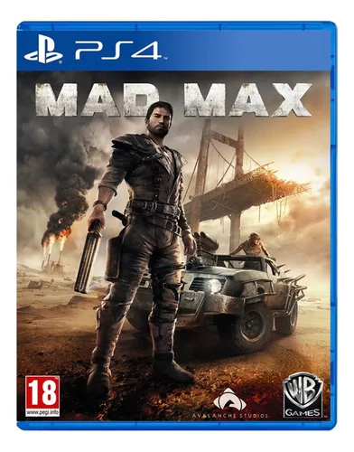

Mad Max es un videojuego de 2015 de género acción-aventura en tercera persona de mundo abierto. Tiene una historia independiente del canon de las películas. Desarrollado por Avalanche Studios, fue publicado por Warner Bros. Interactive Entertainment el 1 de septiembre para PC, PlayStation 3, PlayStation 4, Xbox 360 y Xbox One.
